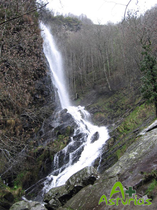

The most western part of Asturias, bordering with Galicia, is the area of Oscos-Eo. Impressive forests, tranquil valleys, and towns that conserve the traditional architecture and predominant use of slate.

• Taramundi: a county linked with iron crafts.
- Os Teixois; this ethnographic site is a living, interactive museum which conserves the slate-built constructions, and also the slate roofs. The site has a mini-power station from the beginning of the 20th century, and conserves the hammer, the mill and the sharpening wheel in perfect condition.
- The famous knives of Taramundi: visit a traditional workshop.
- The Water House of Bres, offers a display of information about water dynamics and their use between the different cultures through History, including clocks of ancient Egypt.
- The mills de Mazonovo Museum, an ethnografic Collection of mills, especially water mills that have been retrieved to show the equipment and creative uses throughout history, as well as explain the activities they were used for.
• Santa Eulalia de Oscos:
- The Sargadelos’ Birthplace, an industrialist of the eighteenth century , houses an exhibition of his works in iron and pottery.
• Villanueva de Oscos:
- Villanueva de Oscos is a town surrounding the medieval Monastery of Santa María, declared a Historical Artistic Monument.
• The old town of Castropol.

Location trail